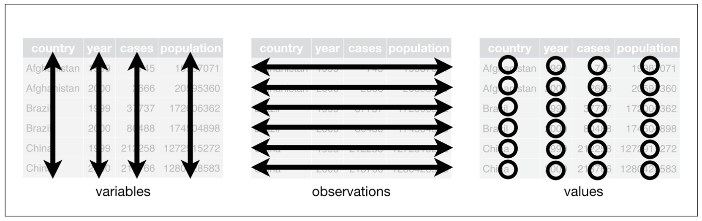

Before you learn how to tidy and wrangle data, you need to know how you want your data set to actually look like, i.e., what the desired outcome of the entire process of tidying your data set is. The tidyverse is a collection of packages which share an underlying philosophy: they are tidy. This means, that they (preferably) take tidy data as inputs and output tidy data. In the following, I will, first, introduce you to the concept of tidy data as developed by Hadley Wickham (Wickham 2014). Second, tidyr is introduced (Wickham 2020). Its goal is to provide you with functions that facilitate tidying data sets. Beyond, I will provide you some examples of how to create tibbles using functions from the tibble package (Müller, Wickham, and François 2020). Moreover, the pipe is introduced.
Please note that tidying and cleaning data are not equivalent: I refer to tidying data as to bringing data in a tidy format. Cleaning data, however, can encompass way more than this: parsing columns in the right format (using readr, for instance), imputation of missing values, address the problem of typos, etc.
3.1 The concept of tidy data
data sets can be structured in many ways. To make them tidy, they must be organized in the following way (this is taken from the R for Data Science book (Wickham and Grolemund 2016)):
Each variable must have its own column.
Each observation must have its own row.
Each value must have its own cell.
They can even be boiled further down:
Put each data set in a tibble.
Put each variable in a column.
This can also be visually depicted:

The three rules that make a data set tidy (taken from Wickham and Grolemund 2016: 149)
This way of storing data has two big advantages:
you can easily access, and hence manipulate, variables as vectors
if you perform vectorized operations on the tibble, cases are preserved.
3.1.1 Making messy data tidy
So what are the most common problems with data sets? The following list is taken from the tidyr vignette1:
Column headers are values, not variable names.
Variables are stored in both rows and columns.
Multiple variables are stored in one column.
Multiple types of observational units are stored in the same table.
A single observational unit is stored in multiple tables.
I will go across the former three types of problems, because the latter two require some more advanced data wrangling techniques you haven’t learned yet (i.e., functions from the dplyr package: select(), mutate(), left_join(), among others).
In the following, I will provide you with examples on how this might look like and how you can address the respective problem using functions from the tidyr package. This will serve as an introduction to the two most important functions of the tidyr package: pivot_longer() and its counterpart pivot_wider(). Beyond that, separate() will be introduced as well. At the beginning of every part, I will build the tibble using functions from the tibble package. This should suffice as a quick refresher for and introduction to creating tibbles.
tidyr has some more functions in stock. They do not necessarily relate to transforming messy data sets into tidy ones, but also serve you well for some general cleaning tasks. They will be introduced, too.
You can create a tibble by column using the tibble function. Column names need to be specified and linked to vectors of either the same length or length one.
This data set basically consists of three variables: German car manufacturer, number of cylinders, and frequency. To make the data set tidy, it has to consist of three columns depicting the three respective variables. This operation is called pivoting the non-variable columns into two-column key-value pairs. As the data set will thereafter contain fewer columns and more rows than before, it will have become longer (or taller). Hence, the tidyr function is called pivot_longer().
# A tibble: 40 × 3
manufacturer cylinders frequency
<chr> <chr> <dbl>
1 Audi 3 cyl 1
2 Audi 4 cyl 50
3 Audi 5 cyl 10
4 Audi 6 cyl 46
5 Audi 8 cyl 31
6 Audi 10 cyl 3
7 Audi 12 cyl 13
8 Audi 16 cyl 0
9 BMW 3 cyl 16
10 BMW 4 cyl 93
# … with 30 more rows
In the function call, you need to specify the following: if you were not to use the pipe, the first argument would be the tibble you are manipulating. Then, you look at the column you want to keep. Here, it is the car manufacturer. This means that all columns but manufacturer will be crammed into two new ones: one will contain the columns’ names, the other one their values. How are those new column supposed to be named? That can be specified in the names_to = and values_to =arguments. Please note that you need to provide them a character vector, hence, surround your parameters with quotation marks. As a rule of thumb for all tidyverse packages: If it is a new column name you provide, surround it with quotation marks. If it is one that already exists – like, here, manufacturer, then you do not need the quotation marks.
# A tibble: 4 × 5
manufacturer model cylinders fuel_consumption_type fuel_consumption_per_100km
<chr> <chr> <dbl> <chr> <dbl>
1 VW Golf 4 urban 5.2
2 VW Golf 4 extra urban 4.5
3 Opel Adam 4 urban 4.9
4 Opel Adam 4 extra urban 4.1
It was created using the tribble function: tibbles can also be created by row. First, the column names need to be specified by putting a tilde (~) in front of them. Then, you can put in values separated by commas. Please note that the number of values needs to be a multiple of the number of columns.
In this data set, there are basically five variables: manufacturer, model, cylinders, urban fuel consumption, and extra urban fuel consumption. However, the column fuel_consumption_type does not store a variable but the names of two variables. Hence, you need to fix this to make the data set tidy. Because this encompasses reducing the number of rows, the data set becomes wider. The function to achieve this is therefore called pivot_wider() and the inverse of pivot_longer().
# A tibble: 2 × 5
manufacturer model cylinders urban `extra urban`
<chr> <chr> <dbl> <dbl> <dbl>
1 VW Golf 4 5.2 4.5
2 Opel Adam 4 4.9 4.1
Here, you only need to specify the columns you fetch the names and values from. As they both do already exist, you do not need to wrap them in quotation marks.
3.1.1.3 Multiple variables in one column
Now, however, there is a problem with the cylinders: their number should be depicted in a numeric vector. We could achieve this by either parsing it to a numeric vector:
On the other hand, we can also use a handy function from tidyr called separate() and afterwards drop the unnecessary column:
ger_car_manufacturer_longer_sep_cyl <- ger_car_manufacturer_longer |># first, take the tibbleseparate(cylinders, into =c("cylinders", "drop_it"), sep =" ") |># and then split the column "cylinders" into twoselect(-drop_it) # you will learn about this in the lesson on dplyr # and then drop one column from the tibble
If there are two (or actually more) relevant values in one column, you can simply let out the dropping process and easily split them into multiple columns. By default, the sep = argument divides the content by all non-alphanumeric characters (every character that is not a letter, number, or space) it contains.
Please note that the new column is still in character format. We can change this using as.numeric():
# A tibble: 40 × 3
manufacturer cylinders frequency
<chr> <dbl> <dbl>
1 Audi 3 1
2 BMW 3 16
3 Mercedes 3 15
4 Opel 3 13
5 VW 3 2
6 Audi 4 50
7 BMW 4 93
8 Mercedes 4 74
9 Opel 4 97
10 VW 4 52
# … with 30 more rows
3.1.2 Insertion: the pipe
Have you noticed the |>? That’s the pipe. It can be considered a conjunction in coding. Usually, you will use it when working with tibbles. What it does is pretty straight-forward: it takes what is on its left – the input – and provides it to the function on its right as the first argument. Hence, the code in the last chunk, which looks like this
# A tibble: 40 × 3
manufacturer cylinders frequency
<chr> <dbl> <dbl>
1 Audi 3 1
2 BMW 3 16
3 Mercedes 3 15
4 Opel 3 13
5 VW 3 2
6 Audi 4 50
7 BMW 4 93
8 Mercedes 4 74
9 Opel 4 97
10 VW 4 52
# … with 30 more rows
because the tibble is the first argument in the function call.
Because the pipe (its precedessor was %>%) has really gained traction in the R community, many functions are now optimized for being used with the pipe. However, there are still some around which are not. A function for fitting a basic linear model with one dependent and one independent variable which are both stored in a tibble looks like this: lm(formula = dv ~ iv, data = tibble). Here, the tibble is not the first argument. To be able to fit a linear model in a “pipeline,” you need to employ a little hack: you can use an underscore _ as a placeholder. Here, it is important that the argument is named.
Let’s check out the effect the number of cylinders has on the number of models:
ger_car_manufacturer_longer_sep_cyl |>lm(frequency ~ cylinders, data = _) |>summary()
Call:
lm(formula = frequency ~ cylinders, data = ger_car_manufacturer_longer_sep_cyl)
Residuals:
Min 1Q Median 3Q Max
-35.426 -15.422 0.106 8.160 63.384
Coefficients:
Estimate Std. Error t value Pr(>|t|)
(Intercept) 44.8562 7.6748 5.845 9.3e-07 ***
cylinders -2.8101 0.8514 -3.300 0.00211 **
---
Signif. codes: 0 '***' 0.001 '**' 0.01 '*' 0.05 '.' 0.1 ' ' 1
Residual standard error: 22.37 on 38 degrees of freedom
Multiple R-squared: 0.2228, Adjusted R-squared: 0.2023
F-statistic: 10.89 on 1 and 38 DF, p-value: 0.002106
As |> is a bit tedious to type, there exist shortcuts: shift-ctrl-m on a Mac, shift-strg-m on a Windows machine.
3.1.3 Further functionalities
3.1.3.1 Splitting and merging cells
If there are multiple values in one column/cell and you want to split them and put them into two rows instead of columns, tidyr offers you the separate_rows() function.
enframe() enables you to create a tibble from a (named) vector. It outputs a tibble with two columns (name and value by default): name contains the names of the elements (if the elements are unnamed, it contains a serial number), value the element. Both can be renamed in the function call by providing a character vector.
If you want to achieve the opposite, i.e., merge cells’ content, you can use the counterpart, unite(). Let’s take the following dataframe which consists of the names of the professors of the Institute for Political Science of the University of Regensburg:
# A tibble: 5 × 1
name
<chr>
1 Karlfriedrich Herb
2 Martin Sebaldt
3 Jerzy Maćków
4 Stephan Bierling
5 Melanie Walter-Rogg
unite() takes the tibble it should be applied to as the first argument (not necessary if you use the pipe). Then, it takes the two or more columns as arguments (actually, this is not necessary if you want to unite all columns). col = takes a character vector to specify the name of the resulting, new column. remove = TRUE indicates that the columns that are united are removed as well. You can, of course, set it to false, too. na.rm = FALSE finally indicates that missing values are not to be removed prior to the uniting process.
Here, the final variant of creating tibbles is introduced as well: you can apply the function as_tibble() to a data frame and it will then be transformed into a tibble.
The two pivot_*() functions lie at the heart of tidyr. This article from the Northeastern University’s School of Journalism explains it in further detail.
3.3 References
Müller, Kirill, Hadley Wickham, and Romain François. 2020. “Tibble: Simple Data Frames.”
Wickham, Hadley, and Garrett Grolemund. 2016. R for Data Science: Import, Tidy, Transform, Visualize, and Model Data. First edition. Sebastopol, CA: O’Reilly.
which can be found here or using vignette("tidy-data", package = "tidyr")↩︎